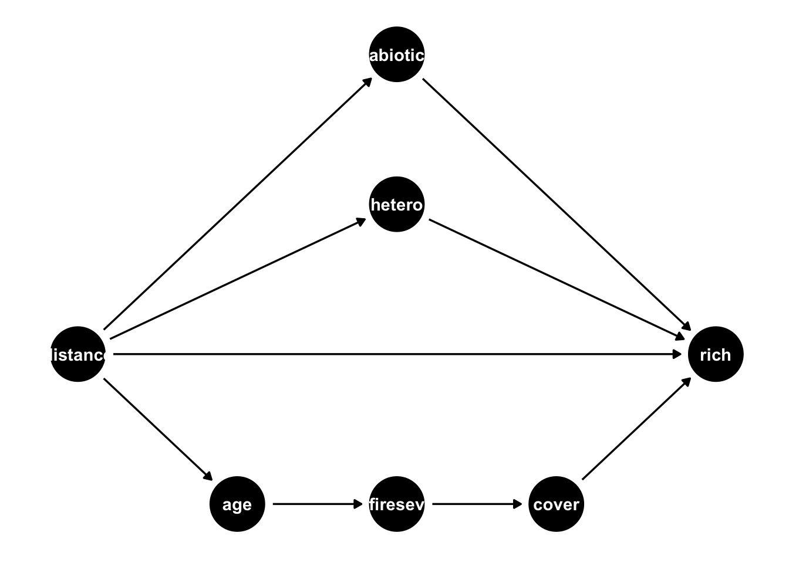

Warning: package 'reticulate' was built under R version 4.4.1GEOG 6960 Causality in Geog. Studies 8
Introduction
In this lab, we’re going to test methods for causal discovery. We’ll use a synthetic example, and a quick test with the Grace and Keeley fire/plant abundance dataset (keeley.csv).
Causal discovery
There are a range of packages with algorithms for causal discovery in both R and Python. Here, we’ll use:
- R: causalDisco - this packages builds on and integrates functions from a set of other packages, mainly from the Bioconductor repository. Installation instructions are given below.
- Python: gcastle. Other packages include causal-learn and cdt, the Causal Discovery Toolbox
First load (or install and load) the relevant packages. We’ll need some additional packages to explore the data before model building.
The causalDisco library has a fairly large number of dependencies, including packages that are not part of the standard CRAN system. You’ll need to run (at least) the following commands after installing causalDisco to get all the appropriate functions. These are all part of the Bioconductor repository to be installed first from here:
https://www.bioconductor.org/
Once you’ve installed this, install the following:
BiocManager::install("graph")BiocManager::install("RBGL")BiocManager::install("Rgraphviz")
Now try loading the packages. If you get errors, please let me know
library(tidyverse)
library(ggpubr)
library(dagitty)
library(ggdag)
library(GGally)
library(causalDisco)
library(pcalg)Install gcastle (pip install gcastle) before going further. You’ll also need the networkx package to visualize the results.
import numpy as np
import pandas as pd
import matplotlib.pyplot as plt
import seaborn as sns
import networkx as nxExample data
First, we’re going to create a synthetic dataset, based on the following ‘true’ DAG. This is the structure that we will try to discover later on:
Note that this implies the following adjacency matrix, where each row represents an origin node, and each column a destination node:
\[ A_{G} = \begin{bmatrix} 0 & 0 & 1 & 0 \\ 0 & 0 & 1 & 0 \\ 0 & 0 & 0 & 1 \\ 0 & 0 & 0 & 0 \\ \end{bmatrix} \]
This will have 4 variables, which we will create as follows:
aa randomly distributed exogenous variable: \(a ~ N(0, 1)\)ba randomly distributed exogenous variable: \(a ~ N(0, 1)\)can endogenous variable ‘caused’ byaandb: \(c = 0.3\times a + 0.2 \times b + N(0, 0.01)\)dthe outcome variable ‘caused’ byc: \(d = 0.8 \times c + N(0, 0.01)\)
If you want to make this more complex, uncomment the line that creates the variable e. This will add an additional collider to the DAG.
set.seed(1)
n <- 10000
a <- rnorm(n)
b <- rnorm(n)
c <- 0.3*a + 0.2*b + rnorm(n, 0, 0.01)
d <- 0.8*c + rnorm(n, 0, 0.01)
# e <- -0.4*a + -0.4*d + rnorm(n, 0, 0.01)
df <- data.frame(a,b,c,d)np.random.seed(1)
n = 10000
a = np.random.normal(0, 1, n)
b = np.random.normal(0, 1, n)
c = 0.3*a + 0.2*b + np.random.normal(0, 0.01, n)
d = 0.8*c + np.random.normal(0, 0.01, n)
# e = -0.4*a + -0.4*d + np.random.normal(0, 0.01, n)
df = pd.DataFrame({'a': a,
'b': b,
'c': c,
'd': d})As usual, we’ll do a little exploration of the data before moving on.
ggpairs(df)sns.pairplot(df)
And here’s the covariance and correlation matrices:
# Covariance
cov(df) a b c d
a 1.024865587 0.004859711 0.3084241 0.24677905
b 0.004859711 0.981640410 0.1977951 0.15809477
c 0.308424135 0.197795129 0.1321874 0.10573187
d 0.246779052 0.158094769 0.1057319 0.08467078# Correlation
cor(df) a b c d
a 1.000000000 0.004845078 0.8379534 0.8377377
b 0.004845078 1.000000000 0.5490910 0.5483710
c 0.837953423 0.549091040 1.0000000 0.9994109
d 0.837737692 0.548371035 0.9994109 1.0000000df.cov() a b c d
a 0.997673 0.015685 0.302499 0.241931
b 0.015685 1.002480 0.205238 0.164176
c 0.302499 0.205238 0.131922 0.105515
d 0.241931 0.164176 0.105515 0.084495df.corr() a b c d
a 1.000000 0.015684 0.833818 0.833262
b 0.015684 1.000000 0.564368 0.564101
c 0.833818 0.564368 1.000000 0.999405
d 0.833262 0.564101 0.999405 1.000000Peters-Clark algorithm
We’ll first estimate the causal graph using the Peters-Clark (PC) algorithm. This starts by creating a fully connected, but undirected graph. Then:
- Edges are removed between variables that are unconditionally independent (i.e. no existing covariance)
- Edges are removed between variables that are conditionally independent (i.e. no existing covariance given other nodes)
- Colliders are identified and directed
- The direction of remaining links is established
In R, the function we will use is pc(). Before running this, we need to create a list with summary statistics for the algorithm. For PC, we need the correlation matrix and the number of observations in the dataset. These will be used to assess the first step:
df_stats <- list(C = cor(df), n = nrow(df))With this, we can then run the PC algorithm. This takes as arguments:
- The list of summary statistics
- A predefined function to test for independence (
gaussCItestfor normally distributed variables, other functions exist for discrete or binary data) - The threshold for inclusion (correlations below this threshold will be excluded)
df_pc <- pc(df_stats, labels = names(df),
indepTest = gaussCItest, alpha = 0.01)The gcastle package has a module algorithms that holds the various search function. We’ll import PC() from this for the Peters-Clark algorithm, and instantiate it. Note that there are several options that can be set at this point, including the threshold for inclusion of edges (alpha) and the test used (ci_test)
from castle.algorithms import PC2024-11-03 13:34:10,268 - /opt/homebrew/Caskroom/miniforge/base/envs/causal/lib/python3.12/site-packages/castle/backend/__init__.py[line:36] - INFO: You can use `os.environ['CASTLE_BACKEND'] = backend` to set the backend(`pytorch` or `mindspore`).
2024-11-03 13:34:10,405 - /opt/homebrew/Caskroom/miniforge/base/envs/causal/lib/python3.12/site-packages/castle/algorithms/__init__.py[line:36] - INFO: You are using ``pytorch`` as the backend.pc = PC(alpha=0.05)Now we can use the learn() function from this object with the data we made earlier. This needs as input the data corresponding to each node, either as a Pandas dataframe or a numpy array.
pc.learn(df)Let’s examine the output:
The ‘discovered’ adjacency matrix is shown in the summary() output. Compare this to the known matrix above.
summary(df_pc)Object of class 'pcAlgo', from Call:
pc(suffStat = df_stats, indepTest = gaussCItest, alpha = 0.01,
labels = names(df))
Nmb. edgetests during skeleton estimation:
===========================================
Max. order of algorithm: 2
Number of edgetests from m = 0 up to m = 2 : 11 12 3
Graphical properties of skeleton:
=================================
Max. number of neighbours: 1 at node(s) 1 2 3
Avg. number of neighbours: 0.75
Adjacency Matrix G:
a b c d
a . . 1 .
b . . 1 .
c . . . 1
d . . . .You can also visualize the resulting graph:
plot(df_pc@graph)
The ‘discovered’ adjacency matrix is shown in the summary() output. Compare this to the known matrix above.
pc.causal_matrixTensor([[0, 0, 1, 0],
[0, 0, 1, 0],
[0, 0, 0, 1],
[0, 0, 0, 0]])from castle.common import GraphDAG
GraphDAG(pc.causal_matrix)<castle.common.plot_dag.GraphDAG object at 0x39b8a4dd0>You can also visualize the resulting graph with the networkx package. We’ll create a function here to do this for the next example as well:
def show_graph_with_labels(adjacency_matrix, mylabels, mypos=None):
rows, cols = np.where(adjacency_matrix == 1)
edges = zip(rows.tolist(), cols.tolist())
gr = nx.DiGraph()
gr.add_edges_from(edges)
if mypos is not None:
nx.draw(gr, node_size=500, labels=mylabels, pos=mypos, with_labels=True)
else:
nx.draw(gr, node_size=500, labels=mylabels, with_labels=True)
plt.show()node_labels = {0: 'a', 1: 'b', 2: 'c', 3: 'd'}
node_pos = {0: (0, 0), 1: (0, 2), 2: (1, 1), 3: (2, 1)}
show_graph_with_labels(pc.causal_matrix, mylabels = node_labels, mypos = node_pos)Looks pretty good right? Try re-running this changing some of the algorithm options (particularly alpha, the threshold for rejecting edges).
Greedy Equivalence Search algorithm
Next we’ll use a greedy search method to find the structure, the Greedy Equivalence Search (GES) algorithm. WStarting from a graph with all the nodes but no edges, this will iterate through three stages:
- Forwards: edges are added until no further improvement is obtained
- Backwards: edges are removed until no further improvement is obtained
- Turning: edges are reversed until no further improvement is obtained
The improvement is measured by a score, in this case the Bayesian Information Criterion (BIC).
In R, this requires first setting up the score function. GaussL0penObsScore is a general function for this, which by default will estimate the Bayesian Information Criterion. This also takes an argument (lambda) to change the weighting (default is \(log(n)/2\)). Setting this to higher values will penalize against more complex graphs.
score <- new("GaussL0penObsScore", df)Now we can estimate the causal structure using the ges() function (setting verbose=TRUE displays the progress through the different steps described above):
df_ges <- ges(score, verbose = TRUE)Casting graph...
Casting options...
Performing GIES...
== starting forward phase (not adaptive)...
inserting edge (2, 3) with C = {}, S = 33716
== starting forward phase (not adaptive)...
inserting edge (2, 0) with C = {}, S = 6051.49
== starting forward phase (not adaptive)...
inserting edge (1, 2) with C = {0}, S = 29796.6
== starting forward phase (not adaptive)...
== starting backward phase...
== starting turning phase...
== starting forward phase (not adaptive)...
== starting backward phase...
== starting turning phase...The resulting object contains the ‘discovered’ graph:
Which can be convert to an adjacency matrix for comparison:
as(as(df_ges$essgraph,"graphNEL"),"Matrix")4 x 4 sparse Matrix of class "ngCMatrix"
a b c d
a . . | .
b . . | .
c . . . |
d . . . .And visualized:
plot(df_ges$essgraph)
In Python, we’ll use the same steps as before: import the algorithm, instantiate it and learn the graph:
from castle.algorithms import GES
ges = GES()
ges.learn(df)The resulting object contains the ‘discovered’ adjacency matrix for comparison:
ges.causal_matrixTensor([[0, 0, 1, 0],
[0, 0, 1, 0],
[0, 0, 0, 1],
[0, 0, 0, 0]])GraphDAG(ges.causal_matrix)<castle.common.plot_dag.GraphDAG object at 0x39c51d370>
And visualized as a graph:
show_graph_with_labels(ges.causal_matrix, mylabels = node_labels, mypos = node_pos)
Causal discovery of Keeley and Grace
Let’s finish by running one of these algorithms with a real dataset. We’ll use the Grace and Keeley data set again here. First load it (and remove the elevation column):
keeley <- read.csv("data/keeley.csv")
keeley <- keeley %>%
select(-elev)
str(keeley)'data.frame': 90 obs. of 7 variables:
$ distance: num 53.4 37 53.7 53.7 52 ...
$ abiotic : num 60.7 40.9 51 61.2 46.7 ...
$ age : int 40 25 15 15 23 24 35 14 45 35 ...
$ hetero : num 0.757 0.491 0.844 0.691 0.546 ...
$ firesev : num 3.5 4.05 2.6 2.9 4.3 4 4.8 4.8 7.25 6.2 ...
$ cover : num 1.039 0.478 0.949 1.195 1.298 ...
$ rich : int 51 31 71 64 68 34 39 66 25 31 ...keeley = pd.read_csv("./data/keeley.csv")
keeley.drop('elev', axis=1, inplace=True)
keeley.describe() distance abiotic age ... firesev cover rich
count 90.000000 90.000000 90.000000 ... 90.000000 90.000000 90.000000
mean 49.234583 49.239025 25.566667 ... 4.565000 0.691232 49.233333
std 8.829480 7.679109 12.566274 ... 1.652347 0.317235 15.105658
min 37.037450 32.593865 3.000000 ... 1.200000 0.055577 15.000000
25% 39.459800 43.812007 15.000000 ... 3.700000 0.487690 37.000000
50% 51.770850 48.036046 25.000000 ... 4.300000 0.637118 50.000000
75% 58.402237 54.898285 35.000000 ... 5.550000 0.914676 62.000000
max 60.723000 70.456286 60.000000 ... 9.200000 1.535408 85.000000
[8 rows x 7 columns]As a reminder, the DAG published in the 2009 paper looks like this:

So, let’s see how close the PC algorithm comes to this:
keeley_stats <- list(C = cor(keeley),
n = nrow(keeley))
keeley_pc <- pc(keeley_stats, labels = names(keeley),
indepTest = gaussCItest, alpha = 0.01)
plot(keeley_pc@graph)
keeley_pc = PC(alpha=0.005)
keeley_pc.learn(keeley)node_labels = {0: 'distance', 1: 'abiotic',
2: 'age', 3: 'hetero',
4: 'firesev', 5: 'cover',
6: 'rich'}
show_graph_with_labels(keeley_pc.causal_matrix, mylabels = node_labels)The results are a bit of a mixed bag. The returned graph is split into two. In one, the richness is correctly identified as being caused by three of the variables. However, the chain linking age to fire severity and richness, while identified, is not linked.
Summary
The final results show that caution is required when applying these methods. These cannot incorporate domain knowledge and so can only find the optimal structure according to the rules of the algorithm. With that in mind, these can provide a useful first pass through the data that can then be modified using theory and domain expertise.